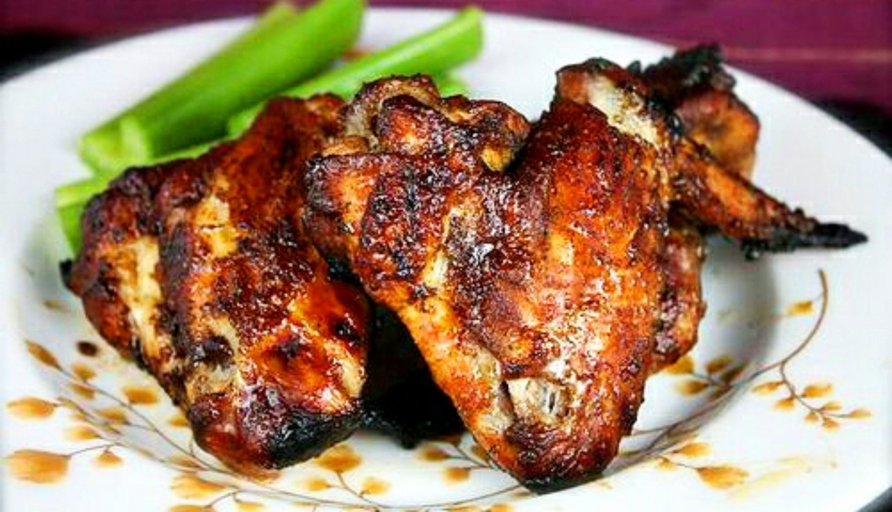

Tandoori Chicken
Home

Tandoori refers to a style of cooking in Indian cuisine where food is marinated in a mixture of yogurt and spices and then cooked in a tandoor, which is a clay oven. The heat generated by burning charcoal or wood in the tandoor cooks the food at high temperatures, giving it a characteristic charred and smoky flavor. Tandoori dishes are often associated with vibrant red color due to the use of spices like paprika or red chili powder in the marinade.
Ingredients
- Chicken Wings - I recommend Bell Evan's brand wings that are already cut in half. If you have whole wings, make sure to cut them in half (wingettes and drumettes) and discard the tips.
- Ginger and Garlic - fresh homemade ginger paste and garlic paste add a nice kick and flavor to the wings. Make sure the ginger and garlic paste is smooth.
- Yogurt - plain full-fat yogurt or plain Greek yogurt.
- Spices - Kashmiri red chili powder, fenugreek leaves, homemade garam masala, turmeric, and salt
- Lemon juice - helps tenderize the meat and helps with marination
Steps
- Trim as much fat and skin off the wings using kitchen shears.
- Add yogurt, ginger-garlic paste, Kashmiri red chili powder, fenugreek leaves, homemade garam masala, turmeric, lemon juice, and salt over the chicken wings.
- Mix it well and refrigerate for at least an hour.
- Preheat the oven to 400 degrees. Place a perforated grilling tray on top of the baking tray (to collect all the drippings and make cleanup easy). Lightly grease the perforated tray and line the wings.
- Bake the wings for 20-25 minutes (in a convection oven) or up to 40 minutes otherwise. Broil on high for the last 2 minutes to get the char marks. Note: Wings can also be cooked on a preheated outdoor grill.
- Serve hot with coriander-cumin spiced yogurt or tangy blue cheese and fresh lemon wedges.
Home